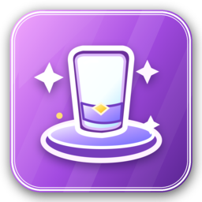

공식 문서
완전한 문서화 NewSeries
각 플러그인의 가이드, 후크, 명령, 권한 및 모든 .yml 파일을 설치합니다. 바로 보거나 복사하거나 다운로드할 수 있습니다.
플러그인을 설치하는 방법
- 플러그인
.jar을 다운로드하여 서버 또는 프록시plugins/폴더에 놓습니다. - 요구 사항 목록에서 필요한 종속성을 설치합니다.
- 플러그인이 부팅되도록 서버를 다시 시작하거나
/reload verify를 실행하세요. config.yml및 데이터 파일을 통해 플러그인을 구성합니다.- 다시 시작하지 않고 변경 사항을 적용하려면 플러그인의 reload 명령을 사용하세요.
문서화된 플러그인
설치, 후크, 명령, 권한 및 구성 파일 등 전체 문서를 보려면 플러그인을 선택하세요.

ProCosmetics 화장품 귀하의 서버를 빛나게 해줄 15개 이상의 화장품 카테고리. 18 .yml11 명령결과 없음
검색어와 일치하는 플러그인이 없습니다. 다른 단어나 카테고리를 사용해 보세요.